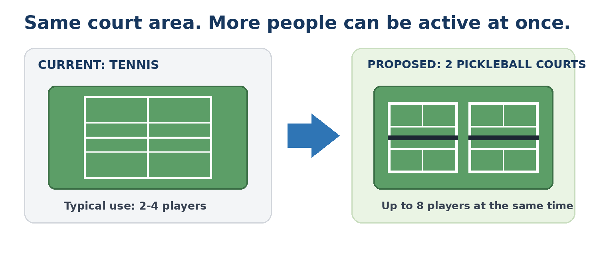
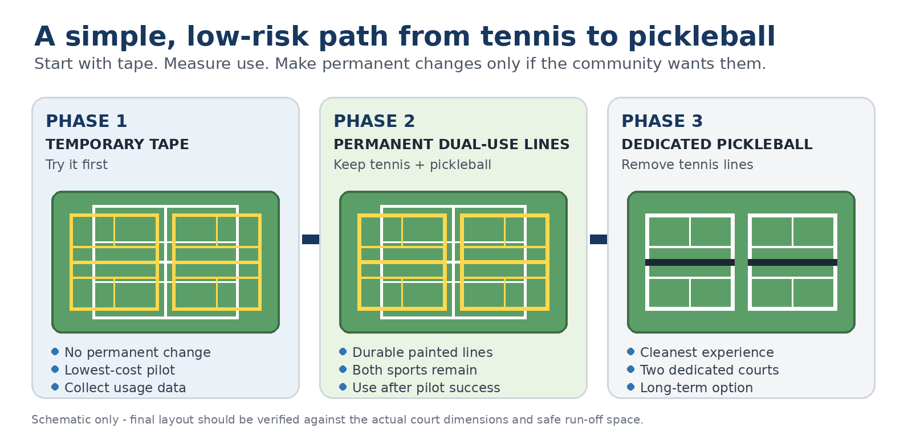

Wellness + focus
A short, active reset from reading, sitting and case preparation—then back to study with renewed focus.
Zero-construction pilot
Use one existing tennis court, removable tape and portable nets to test demand—before making any permanent change.

Why this could matter
A simple open-play program can support several law-school priorities at once, while making better use of space the school already has.
A short, active reset from reading, sitting and case preparation—then back to study with renewed focus.
Doubles creates relaxed interaction among students, faculty, alumni and visiting legal professionals.
Quick to learn and driven by touch and strategy as much as athleticism—approachable across experience levels.
Two temporary layouts can put up to eight people in play, with others rotating through short games.
Open play gives 1Ls, 2Ls, 3Ls, LL.M. students, faculty, staff and alumni a reason to connect.
One space, more connection
Traditional tennis usually serves two to four players at once. Two temporary pickleball layouts can accommodate eight active players, while an open-play queue keeps the space social and moving.
Final layouts must be verified against actual court dimensions and safe run-off space.

The community engine
Open play removes the need for a pre-arranged match. During designated hours, anyone can arrive, join the queue, play, rotate and meet someone new.

Come during designated open-play hours.
Add your name or place your paddle.
Four players take the court for doubles.
New players enter; partners and opponents change.
Data before permanence
The pilot is the decision point—not a promise of construction. Each later phase requires its own evidence, review and approval.
Portable nets, removable lines, scheduled open play and participation tracking.
Decision requestedEvaluate permanent pickleball lines while retaining full tennis use.
Future evaluationInvestigate only if sustained demand clearly supports design and cost study.
Not requested now
Proposed pilot
The surrounding area stays unchanged. The school gains real evidence about demand, participation and community value.
How it works
Verify the layoutConfirm two safe temporary layouts within the existing court area.
Mark temporarilyUse removable court tape and portable nets—no paint or resurfacing.
Schedule open playCreate reliable hours when people can arrive alone or in groups.
Run for 8–12 weeksAllow enough time to observe repeat use, not just opening-week interest.
Review the evidenceShare results before considering any permanent solution.
What we measure
Not being requested
Requested decision
Authorize a temporary pickleball pilot on one existing tennis court using removable lines and portable nets. After the trial, review actual participation before considering any permanent project.